MEET THE TEAM
TEAM MENTORS
Mr Miles
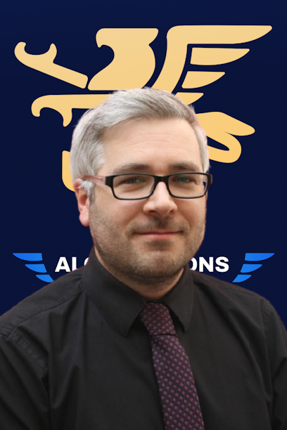
About
Associate Head Teacher & Computing Teacher
Mr Miles is the Organiser of the Algoryphons and a Computer Science Teacher. He formed the Algoryphons team as a means to get the school involved in robotics and enticed us as a team to join.
Fun fact: "I love ducks (Rubber ducks - they are good for coding)"
"I am very proud to be an 'Algoryphon'. I have enjoyed seeing you all take on the challenge of the mighty 'Triton' robot. To be an Algoryphon is to be united, a team player and to be committed. Determination is also a key strength for all Algoryphons which has been shown by everyone involved. I think that all teams members represent the 'Gryphon' - part Eagle and part Lion - the cunningness and sharp eyes of an eagle and the careful but planned strength of the lion."
Mr Williams
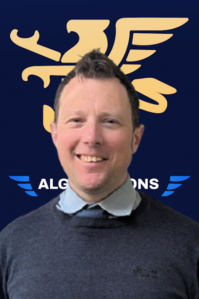
About
Head of Computer Science & Computing Teacher
Mr Williams is our mentor for the team here at the Gryphon School. He helps by contributing his knowledge of programming to help mentor our coding team to further develop our robot and visits the team monthly.
Fun fact: "I like skating and I have an electric skateboard."
"As a staff member of the Algoryphons, I am incredibly proud of everything the team has achieved. Watching them grow in confidence, tackle complex challenges, and bring their ideas to life through hard work and creativity is truly inspiring. Their dedication, teamwork, and problem-solving skills never fail to impress me. It’s a real privilege to support and guide such a passionate group of young people and be part of the team."
TEAM MASCOTS
Digby
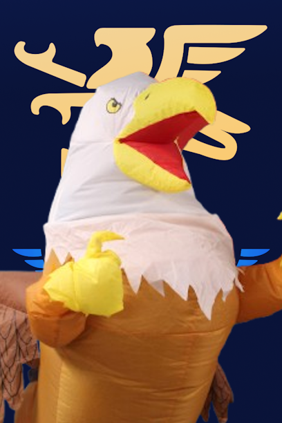
About
33 Years Old
Team Mascot
Team Mascot
Digby is known to be a little on the silly side, but always manages to scrape through when needed
Fun fact: Gets paid in bird seed
"I mean its kind of cool and all tbh im just some sort of mascot or wtv, they ask me to do this, they ask me to do that and i do a little funky dance, yeah its cool and all"
Foster
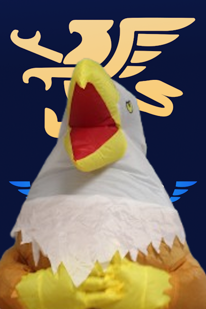
About
33 Years Old
Team Mascot
Team Mascot
Foster is known to be a lot more serious and prefers to have a more dignified and planned set of actions
Fun fact: Is as old as the school!
"I mean it's an honour and a privilege and I love how I can be a mascot of this team and represent everything there is too it and most importantly their values! I find this team incredible honestly"
TEAM LEADERS
Fynn
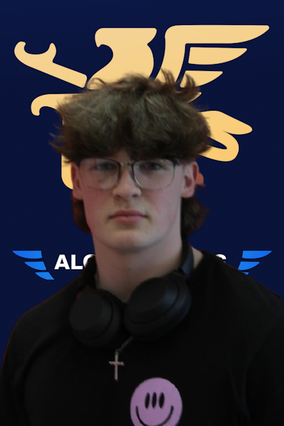
About
Year 12
Team captain
Team captain
Fynn is our Team Leader and decided to join the team due to his interest in Computer Science and being a bold leader.
Interested in Video games, Fortnite, Minecraft
"To be an algoryphon it means dedication, fame and respect for the competition. The game has never been so back."
Harry
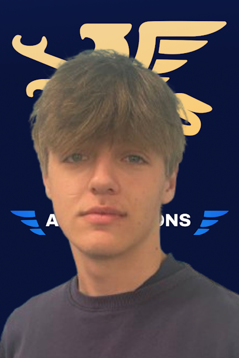
About
Year 12
Leading Software Engineer
Leading Software Engineer
Harry is our Coding Leader, and joined the team due to his passion of coding and computer science, believing that this is an effective way to practically apply his skills.
Interested in McDonalds, Videogames, Football and History. Tottenham Supporter
"Great pride in the team and what we can achieve and accomplish together - Overcome and Adapt"
Rupesh
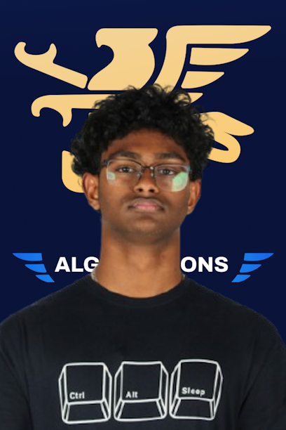
About
Year 12
Leading Engineer
Leading Engineer
Rupesh is our Building Leader, and joined the team as he wants to take part in a biomedical engineering and has a keen interest in robots as a child.
Interested in Badminton, Volleyball, Food, Cats, K2, Mountaineering, Bouldering, Runs and Chemistry
"I get to spend a lot of time with my friends working on something we all have a common interest and are passionate about, and the best part is it equips me with life skills in the future like team work, managing deadlines and problem solving skills."
Rhys
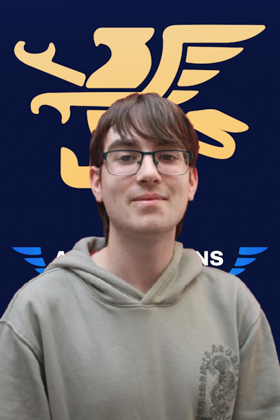
About
Year 12
Marketing Director
Marketing Director
Rhys is in our PR team and is our Marketing Manager. He joined the team as he wanted to try something out of his comfort zone, and shared an interest in the First Tech Challenge.
Interested in Videogames, Guitar, Japanese and its culture
"To be an Algoryphon you need to be able to rise up to the challenge of the First Tech Challenge. Our cooperation and teamwork skills are what bring us together as a team and raise our spirits."
TEAM MEMBERS
Josh W
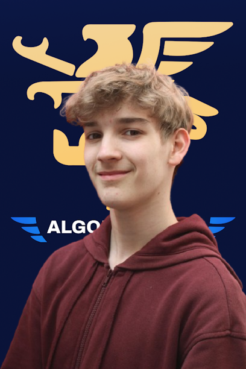
About
Year 12
Social Media Specialist
Social Media Specialist
Josh is part of our PR and Marketing team, and joined the team to help develop his marketing and designing skills and to further his teamwork and cooperation.
Interested in Performing Arts, Geography and Film Studies
"Being an algoryphons means to tackle any obstacle in your way; to overcome and adapt."
Aaron
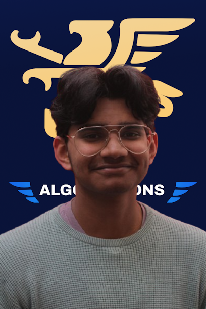
About
Year 12
Events Organiser
Events Organiser
Aaron Ajay is part of our PR & Marketing team, and he joined the team due to his curiosity and his excitement for this new experience, along with being able to spend time with friends.
Interested in Badminton, Air Cadets and Alter Services
"To be an Algoryphon means a lot to me, as I have earned and put into effect a lot of skills i.e. communication, teamwork, organisation etc. Being an Algoryphon means that everyone has a level of responsibility and everyone is valued in the team. It is my pleasure to be working as part of such an amazing group"
Josh F
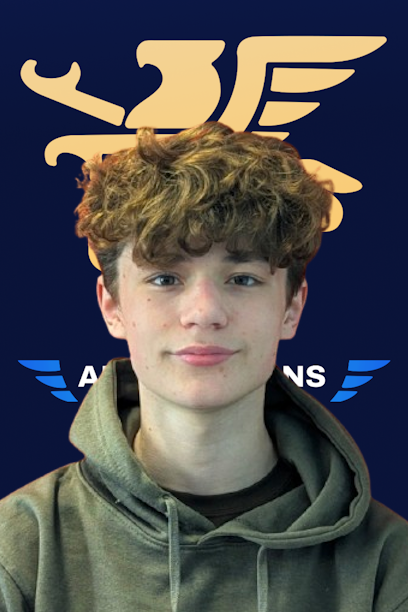
About
Year 12
Design Developer
Design Developer
Josh is in our PR and Marketing team. He joined the team as he is interested in robotics and it was an opportunity for him to spend more time with his friends with an academic benefit to it aswell
Interested in Spiders
"The Algoryphons are not just a robotics club, we are ones with the universe, ones with ourselves, and one with the all knowing, and all loving creator. We love this creator, despite his designed life, which means we are insignificant. Because the end doesn't mean we are gone. He knows this, he knows it the best, after all, is something beautiful because it lasts? or do we appreciate its beauty only once we meet it's end."
Yao-Yao
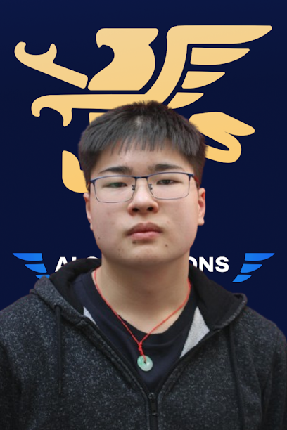
About
Year 12
Accountant
Accountant
Xiang-Yao is in our PR and Marketing team, and joined the team as he wanted to use and develop his economics knowledge practically through marketing.
Interested in Languages, Videogames, History, Mythology
"It means being brought down to the lowest point, but never giving up. To overcome and adapt to any situation. To go nowhere but up."
Adonis
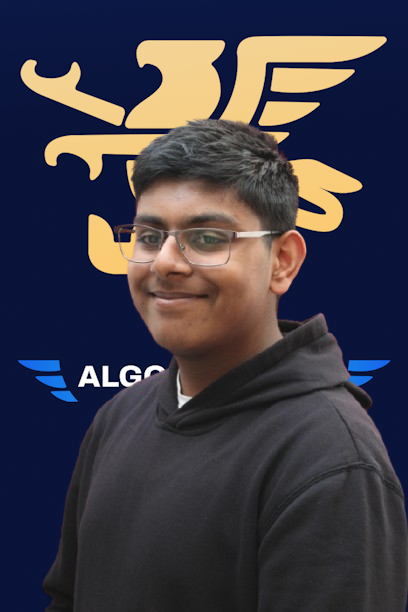
About
Year 12
Engineer
Engineer
Adonis is part of our Building team, and joined the team as he enjoys constructing robots and wants to enter engineering as a career. He believes that this a good opportunity to practice his skills.
Interested in Physics, Videogames and Anime
"It means to be part of not just a team, but a community, and it represents the passion, blood, sweat and tears that were put in to get us where we are today; our perseverance and resilience, even when everything starts breaking, as that's just an opportunity to build back up. :)"
Lukas
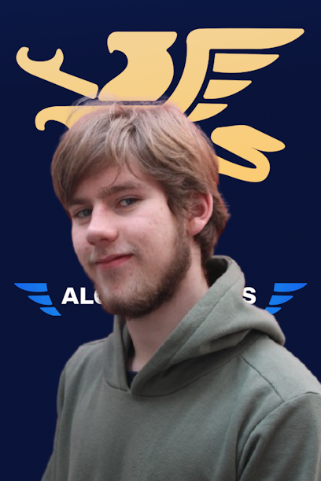
About
Year 12
Engineer
Engineer
Lukas is in our building team and joined the team because he thought it would be interesting and a fun experience.
Interested in Editing (video), trumpet and Karate
"It's an honour. What we do is something I find amazing, because we are creating a robot that can move around, pick up blocks and do so much from scratch! I love being a part of this team and I love helping in anyway I can."
Amber
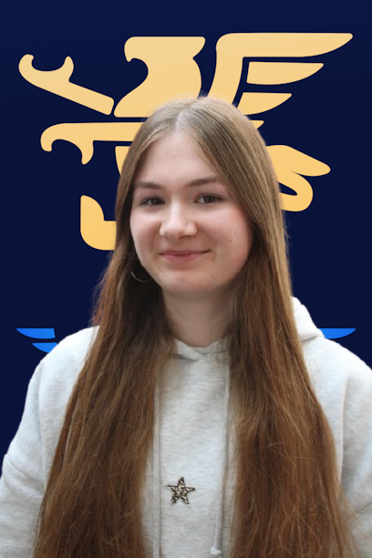
About
Year 12
Software Engineer
Software Engineer
Amber is part of our Coding team, and joined the team as she has a keen interest in computer science and coding and believes that this is a good way to apply it in the real world.
Interested in Videogames and Computer Science
"We have an amazing team spirit and the sense of joint accomplishment is always rewarding. Being part of the team is about working together, understanding and perseverance, which our team consistently succeeds in."
"When I was born, I was young; I didn’t speak to my parents for 12 months. Life was hard; I couldn’t even see my own forehead. I had to teach myself to code, and I made it to a spot in the Algoryphons. We are all people. Not only that, but people that overcome and adapt."
Tom
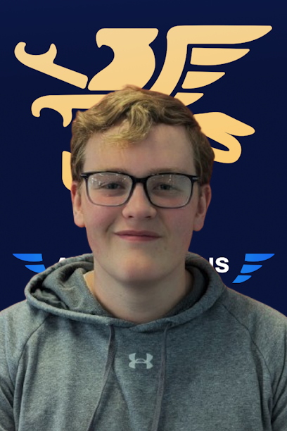
About
Year 12
Software Engineer
Software Engineer
Tom is in our Coding and Building team, he is a crucial part to the technical part of the team. He joined us as he is very interested in computer science and the idea of representing his team stood out to him.
Interested in Coding, and Japanese culture
"To be an Algoryphon, you need to be a bit on the nerdy side and you got to be able to work well as a team. I can’t think of anyone in the team who doesn’t fit in this category. Pretty much anyone can tell you that we’re probably the most nerdy group in the school and honestly that fits the team pretty well."
Ollie
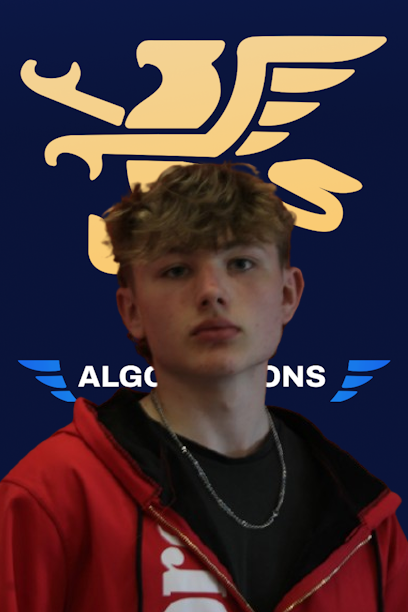
About
Year 12
Software Engineer
Software Engineer
Ollie is part of our Coding team and joined the team through word of mouth from the Team Leader, and believed it was a good opportunity to hone his coding skills.
Interested in Fortnite
Jacob
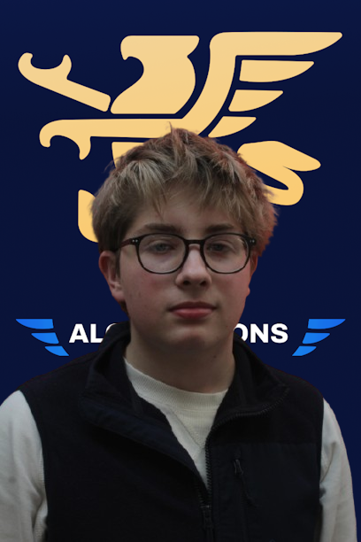
About
Year 12
Creative Contributer
Creative Contributer
Jacob is part of are PR and Marketing team. He is interested in digital design which lead him into joining our team.
Interested in Guitar and Web design (helped design the website)
"We punch above our weight because we focus on what matters: smart design, sharp thinking, and solid teamwork."
Ryleigh
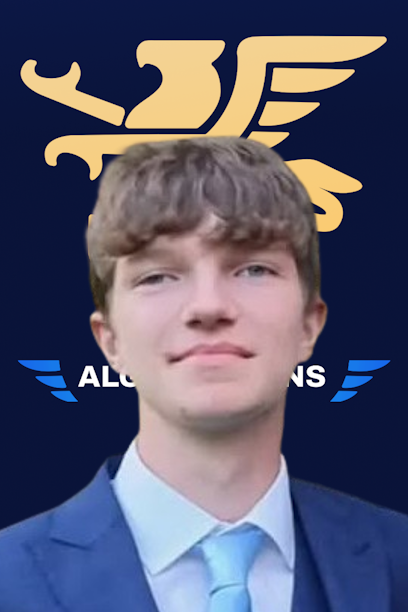
About
Year 12
Photographer
Photographer
Ryleigh is our Photographer/ blogger for the team. Decided to join the team through word of mouth by the team leader, with the intention of filling the role of Photographer as he studies the subject at A-Level.
Interested in Photography, Writing music and Playing guitar, Motor racing
"From a young age, I have always wanted to be a photographer. The art of photography is an art that many plebeians fail to understand. I show my passion for photography through working with the Algoryphons. They should be thankful I am an Algoryphon. I guess being an Algoryphon is being passionate."